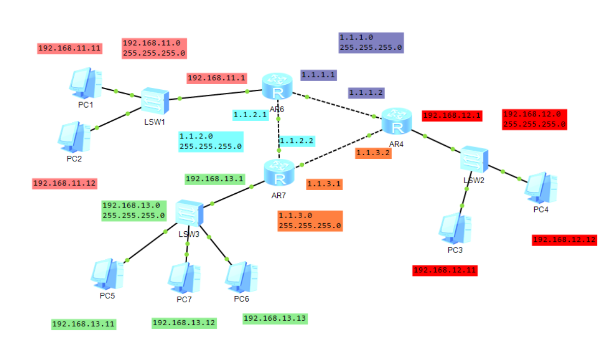
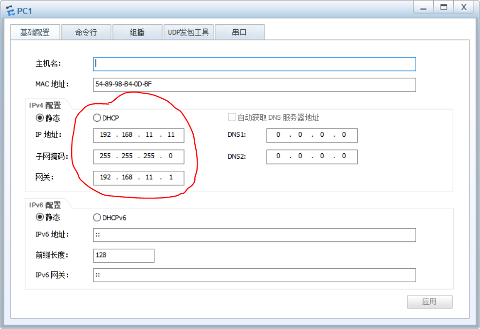
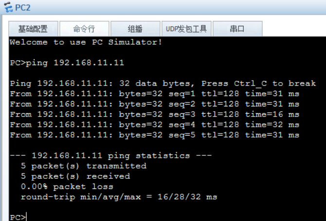
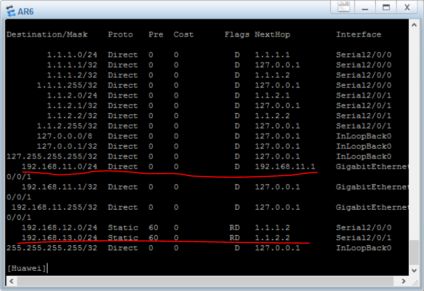
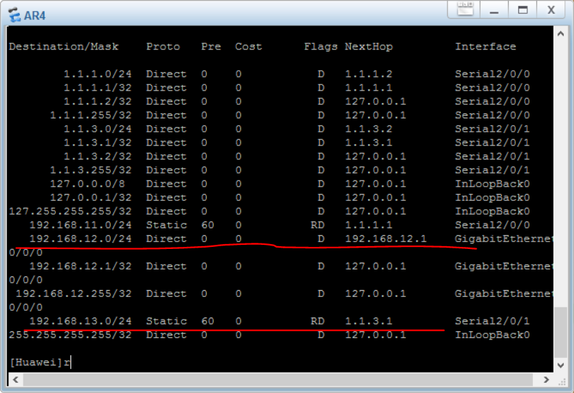
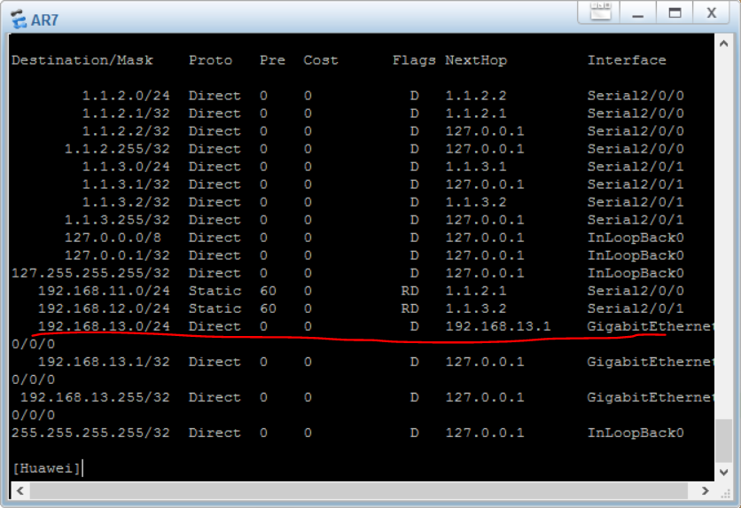
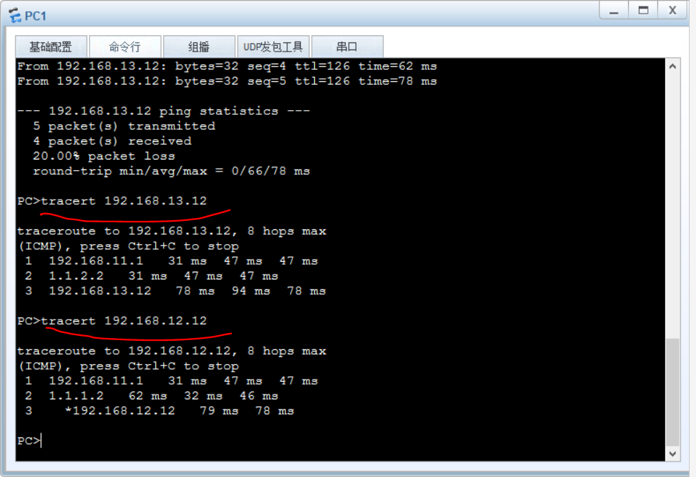
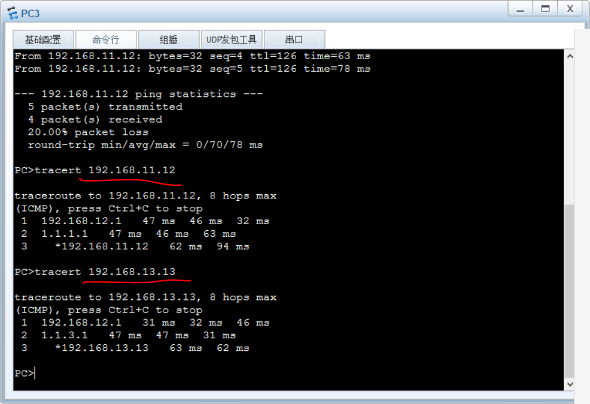
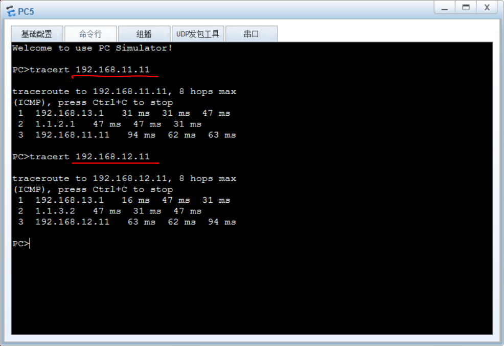

实验内容
- 路由器设置
- 手动设置静态路由
实验环境
- 华为路由器AR1220
- 主机
- Serial设备连接串口线和Copper以太网和千兆以太网连接线
备注：所有实验设备均由ensp模拟。
路由连接实验设计
整体结构如下：

- 1.其中分为六个不同的局域网；
1 | 192.168.11.0 网段 -> |
- 2.设备的连接：
除了路由器之间连接使用serial串口连接线外，其他均使用Copper连接线。
实验步骤
配置各个局域网的ip及其网关
- 例如：192.168.11.0网段下的192.168.11.11主机：

- 配置 192.168.11.1作为192.168.11.0网段的网关：

所有主机经过配置后，他们应该可以ping通自己网段下的所有主机，如：192.168.11.12 ping 192.168.11.11

- [需要注意的是]： 由于路由器互连时使用的是Serial串口，所以路由器之间配置的是serial串口的ip作为接口：
例如：配置AR6的两个serial串口1.1.1.1和1.1.2.1：
1 | <Huawei> system-view |
各个路由器的静态路由：
对于路由器AR6,我们希望所有目的网络为192.168.12.0的数据包都交付给AR4,即下一跳为1.1.1.2;所有目的网络为192.168.13.0的都交给AR7,下一跳为1.1.2.2：
1 | <Huawei> system-view |
对于路由器AR4，所有目的网络为192.168.11.0的数据包交给AR6，下一跳为：1.1.1.1，目的网络为192.168.13.0的数据包交给AR7，下一跳为：1.1.3.1：
1 | <Huawei> system-view |
对于路由器AR7， 所有目的网络为192.168.11.0的数据包都交给AR6，下一跳为：1.1.2.1，所有目的网络为192.168.12.0的数据包都交给AR4，下一跳为：1.1.3.2：
1 | <Huawei> system-view |
经过以上对各个路由器的静态路由的配置后，我们可以通过1
display ip routing-table
来查看各个路由器的路由表：
- AR6路由表：

- AR4路由表：

- AR7路由表：

测试实验结果
使用任意一个局域网下的主机ping不同局域网下的主机：
- 192.168.11.11 ping 192.168.13.12 和 192.168.12.12:

- 192.168.12.11 ping 192.168.11.12 和 192.168.13.13:

- 192.168.13.11 ping 192.168.11.11 和 192.168.12.11：

由以上测试可以看出简单的路由器连接实验成功。